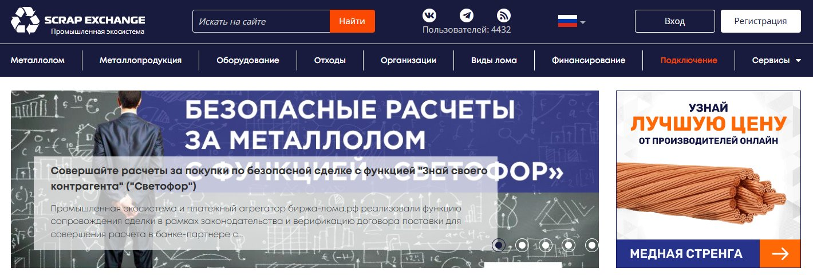
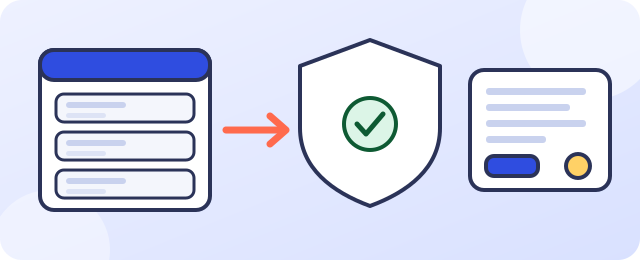

Наш проект · промышленный маркетплейсВ работе: результаты после запуска
Безопасная сделка для маркетплейса «Биржа лома»
Превращаем доску объявлений в площадку, где сделка проходит по понятным этапам. ИИ проверяет лоты и документы, подсказывает сторонам шаги и передаёт человеку только спорные случаи.
5этапов сделки от лота до закрытия
3статуса проверки лота: в порядке, уточнить, специалисту
100%решений о допуске и спорах остаются за человеком
после запускацифры эффекта опубликуем после замера

